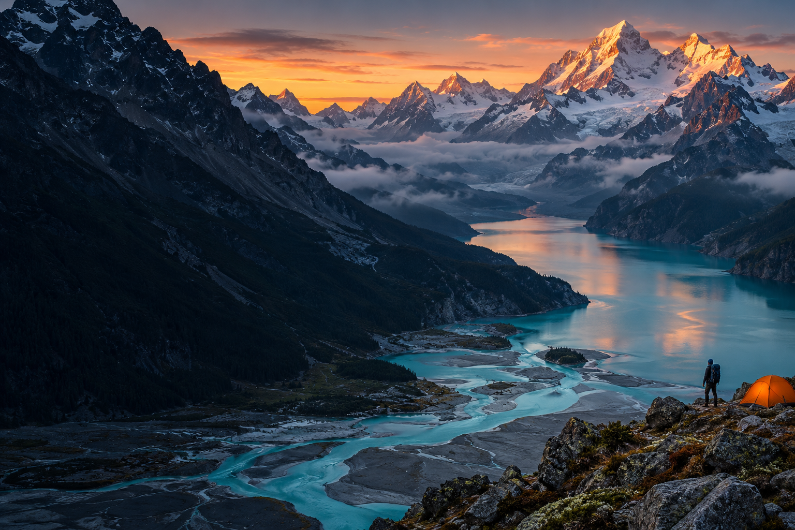

LEAVE THE NOISE BEHIND.
向野
把未读消息，留在山的那边。
把自己，还给一次辽阔。
45° / IMAGINED NORTH
一条不存在于地图上的概念路线
一条不存在于地图上的概念路线
N✦S
● CAMP 01
山湖 · 营地
山湖 · 营地
WHERE / 目的地北境山湖 · 概念路线
WALK / 徒步8 KM / 轻徒步
DEPARTURE / 出发16:00 / 蓝调时刻
01THE WILD AWAITS.
风景与路线均为概念演示，不对应真实目的地或出行安排。
这里保留的，是一次重新观看世界的想象。